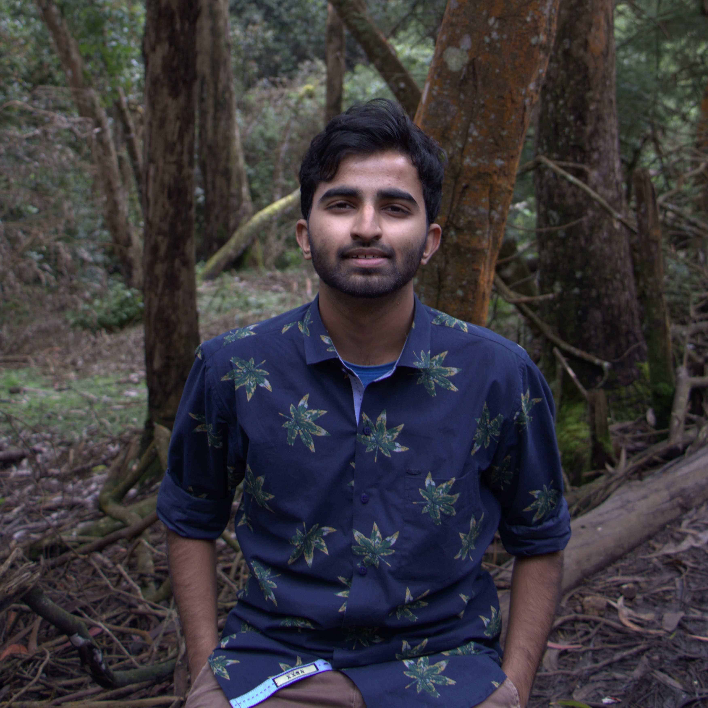

Student at VIT Vellore| Software Engineer| Node Developer| Data Science Enthusiast
Currently in 3rd year at VIT Vellore. Always expanding my knowledge and skill set. A hard working and a self motivated student with creative and critical thinking skills. A good speaker and always updated with current affairs. A table tennis player and a football player for the school team.
Apart from academics and sports,I spend time learning instruments. I can currently play the piano and the drums. During my leisure time I sketch some drawings or else I read my novels.